张家界国家森林公园[金鞭溪]
#1 张家界国家森林公园[金鞭溪]作者：有志青年 发表时间：2007-7-24 17:24:00
张家界国家森林公园包含黄石寨、金鞭溪………………
我们从金鞭溪进入，大约走了两个多小时，到达森林公园的广场，之后坐索道上黄石寨，可惜雨非常大，上去后什么也没有看到，下面的照片是在金鞭溪沿途拍摄的。
这次金鞭溪徒步行走，小树全部自己步行，很值得表扬，还在南通的时候，导游就说了“金鞭溪全长7.5公里，你们带着小孩子，到时候要累了哟，一旦进入金鞭溪，将没有回头路”，大家都不曾想到小树自己徒步走出来了。
金鞭溪两岸的山：
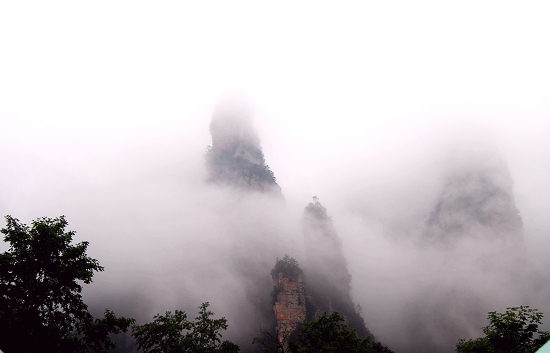
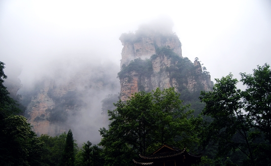
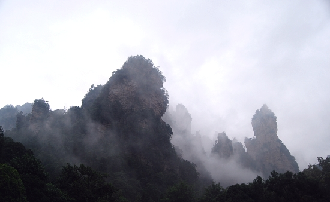
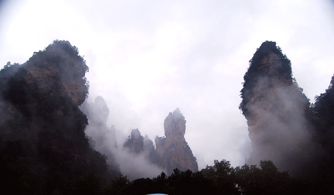
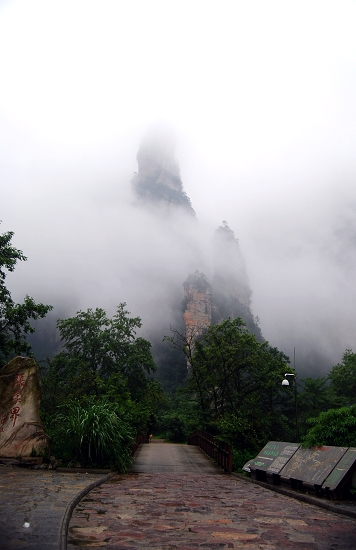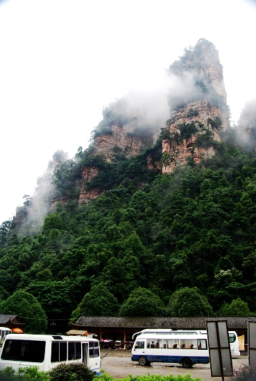
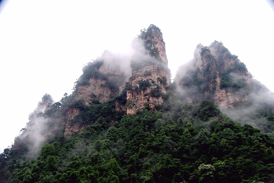
金鞭溪的水
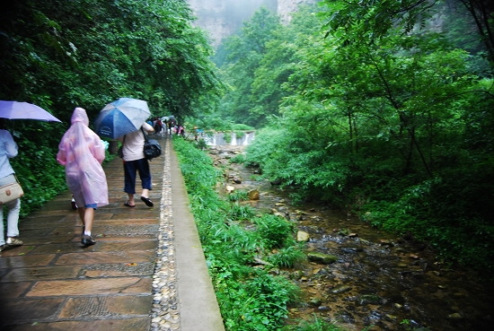
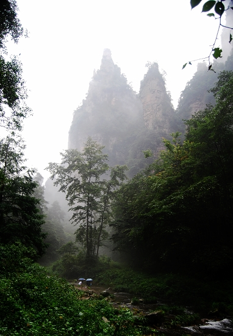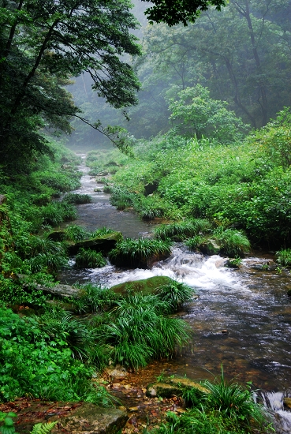
胜利走出金鞭溪
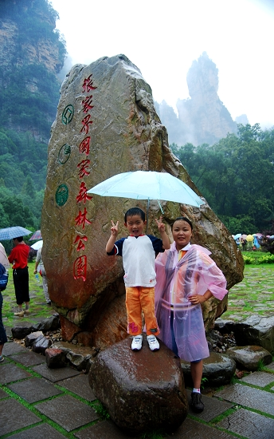
#2 Re:张家界国家森林公园[金鞭溪]作者：黄药师 发表时间：2007-7-24 21:54:15
这几张照片看起来像西游记里面三打白骨精的背景啊！
#3 Re:张家界国家森林公园[金鞭溪]作者：有志青年 发表时间：2007-7-24 21:55:24
黄药师眼睛厉害，金鞭溪是西游记外景基地
#4 Re:张家界国家森林公园[金鞭溪]作者：朗星 发表时间：2007-7-25 7:44:06
刚在看鬼故事，照片里的山和雾有点鬼森森的感觉～～～～～～～～～
#5 Re:Re:张家界国家森林公园[金鞭溪]作者：有志青年 发表时间：2007-7-25 8:22:14
引用：鬼和仙是同样的一类哟
原文由 朗星 发表于 2007-7-25 7:44:06 :
刚在看鬼故事，照片里的山和雾有点鬼森森的感觉～～～～～～～～～
#6 Re:张家界国家森林公园[金鞭溪]作者：无尽 发表时间：2007-7-25 9:02:46
美景~ 空气一定很好